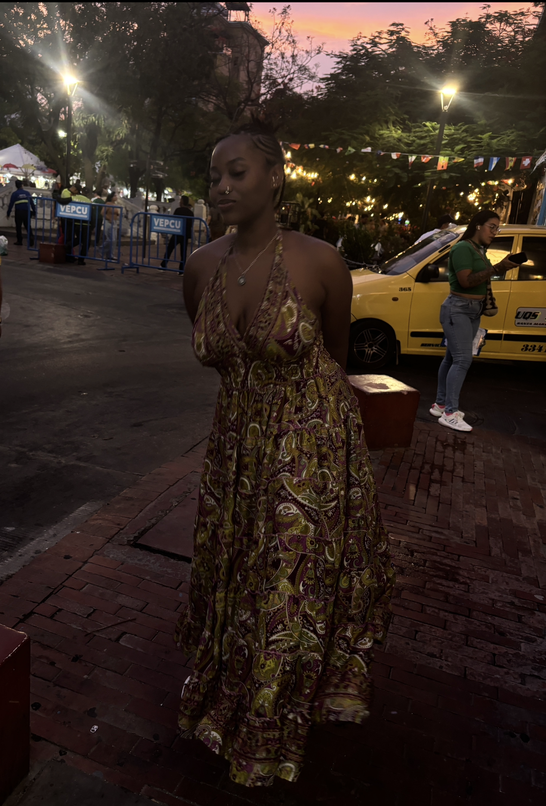

Hi everyone! My name is Nyala Herrington-Barrett (In-yay-luh), and I'm a third-year Honors Computer Science student at North Carolina Agricultural and Technical State University. I'm originally from Georgia and generally consider myself an Atlanta native, having lived throughout the metro Atlanta area for most of my life. I've also lived in Malvern, Pennsylvania and San Diego, California.
While I'm majoring in Computer Science, I'm tailoring my career toward cybersecurity, an interest I've had since high school. I attended Innovation Academy, a STEM magnet high school in Alpharetta, Georgia, where I studied engineering with a cybersecurity focus. I ultimately chose to continue that path in college through Computer Science. I'm also interested in artificial intelligence and am excited to see where my interests take me professionally.
Outside of academics, community involvement is very important to me. I've volunteered consistently since tenth grade, and I love spending time with friends and family. In another world, I'd be pursuing the career of an elementary school educator, so most of my volunteering is centered around kids. One of the things I value most in life is creating experiences, which I equate with truly living. I'm always down for a random adventure or what I like to call a side quest! This year, I'm especially focused on "loremaxing," gathering as many unique experiences as possible and creating stories I'll be able to look back on.
My most consistent hobby is reading; I read almost every day. I also enjoy watching anime and am learning Japanese and further developing my Spanish skills. I have an older sister (27) and a younger brother (18). Aside from them, I also have a nephew (7) who is my favorite person in the world.
That's a little bit about me — nice to meet you all!
Learn more about my skills and background → The Little Prince →